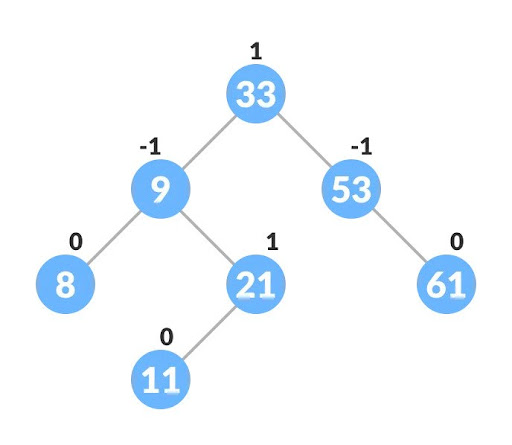
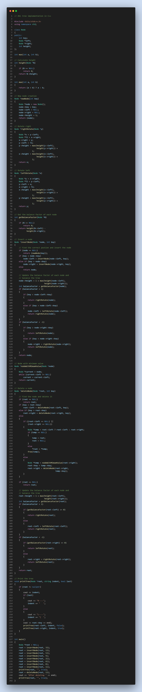

AVL Tree
AVL tree is a self-balancing binary search tree in which each node maintains extra information called a balance factor whose value is either -1, 0 or +1.
AVL tree got its name after its inventor Georgy Adelson-Velsky and Landis.
Balance Factor Balance factor of a node in an AVL tree is the difference between the height of the left subtree and that of the right subtree of that node.
Balance Factor = (Height of Left Subtree - Height of Right Subtree) or (Height of Right Subtree - Height of Left Subtree)
The self balancing property of an avl tree is maintained by the balance factor. The value of balance factor should always be -1, 0 or +1.
An example of a balanced avl tree is:

Why AVL Trees?
Most of the BST operations (e.g., search, max, min, insert, delete.. etc) take O(h) time where h is the height of the BST. The cost of these operations may become O(n) for a skewed Binary tree. If we make sure that height of the tree remains O(Logn) after every insertion and deletion, then we can guarantee an upper bound of O(Logn) for all these operations. The height of an AVL tree is always O(Logn) where n is the number of nodes in the tree (See this video lecture for proof).
Source Code

Watch the video for understande more-